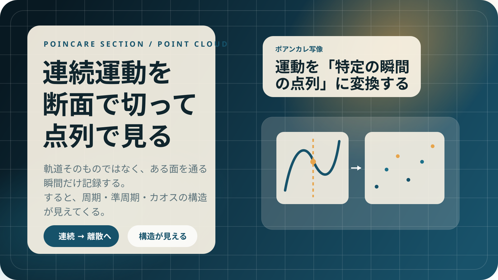

連続運動を追う
状態は時間とともに滑らかに変化し、軌道として空間を動きます。ここではまだ情報が多すぎて、規則性が見えにくい状態です。
Poincare Section / Standard Map / Chaos
前のページで見たように、カオスではほんの小さな初期差が将来の大きな違いになります。
では、その複雑な軌道の中にどんな構造が残っているのでしょうか。連続的に動く軌道をそのまま眺めると、複雑な系では構造が見えにくくなります。
そこで「ある断面を通る瞬間だけ」を記録し、運動を離散的な点の並びとして見るのがポアンカレ写像です。

連続運動を、特定の瞬間の点列に変換する方法です。複雑な運動でも、断面で見ると構造が見えます。
Core Idea
連続運動 → 断面で抜き出す → 点の反復
軌道そのものではなく、選んだ断面を通過する瞬間だけを見ると、数学的にも視覚的にも扱いやすくなります。
Concept
位置や速度などをまとめた「状態」は時間とともに連続的に変化します。けれども複雑な系では、軌道をそのまま追うだけでは全体像が見えません。
状態は時間とともに滑らかに変化し、軌道として空間を動きます。ここではまだ情報が多すぎて、規則性が見えにくい状態です。
たとえば振り子なら「真ん中を通る瞬間だけ」を見る、と決めます。その瞬間の速度や角度だけを毎回記録します。
すると連続時間の運動は、離散時間の写像として扱えます。軌道そのものではなく、点の反復としてパターンが見えるようになります。
連続運動 ↓ あるタイミングだけ抜き出す ↓ 離散的な写像になる
これがポアンカレ写像の本質です。
Patterns
最大の強みは、運動の種類が点の並びとしてはっきり見えてくることです。
Periodicity
同じ状態を繰り返すので、点は有限個に集まります。
Quasi-Periodicity
点が閉じた曲線や輪のように並び、規則はあるが同じ点には戻りません。
Chaos
点はバラバラに見えますが、完全にランダムではなく、背後に力学の構造があります。
Why It Matters
三体問題のような複雑な力学では、軌道そのものを直接見るだけでは全体構造がつかめません。ポアンカレ写像はその突破口でした。
ポアンカレは三体問題を研究する中で、軌道をそのまま追うのではなく、断面で切り出して見れば構造が表れることに気づきました。
ここから、カオス研究の流れが大きく開かれていきます。
連続運動
ある瞬間だけ
動きの本質が見える
Interactive Demo
標準写像は「一定時間ごとにキックを受ける回転系」を、キックの瞬間だけ切り出したものです。つまり、ポアンカレ写像の代表例です。
ここで K は非線形の強さです。K を上げるほど、規則的な構造が壊れやすくなります。
描いているのは、連続軌道ではなく「キックの瞬間だけの点列」です。まさにポアンカレ写像の見方そのものです。
Mechanism
キーワードは 共鳴の重なり です。K を上げると規則的な構造が壊れ、点が混ざり始めます。
トーラスに沿った滑らかな曲線が残りやすく、運動はほぼ規則的です。
周期運動の島が増え、それぞれの影響範囲が広がると、規則と不規則が混ざり始めます。
共鳴どうしがぶつかると軌道が広く混ざり、カオス的な海が現れます。
一言でまとめると
標準写像でのカオスとは、規則的な運動を支えていた構造が壊れ、軌道が混ざる現象です。
Next
ポアンカレ写像と標準写像を理解すると、より深いカオス理論へ進みやすくなります。